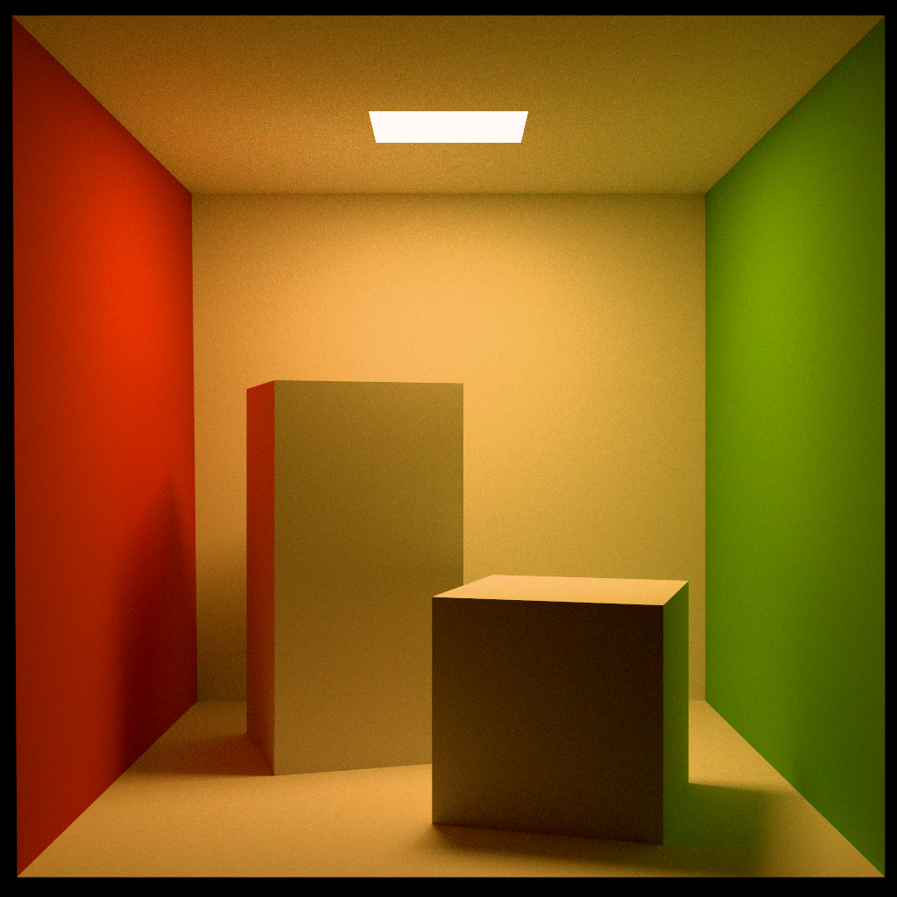
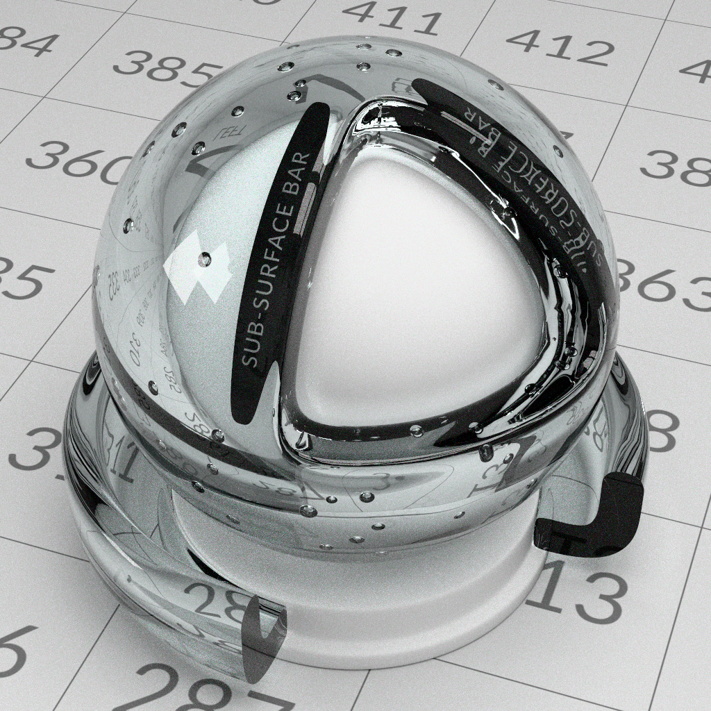
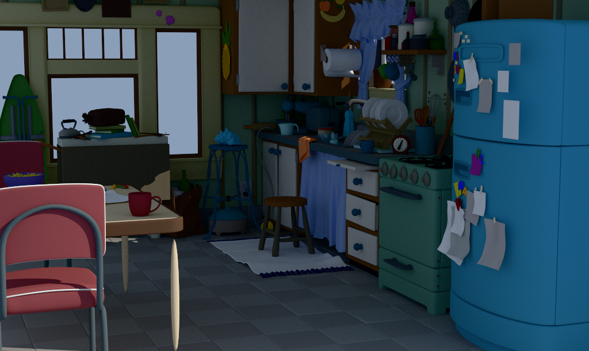
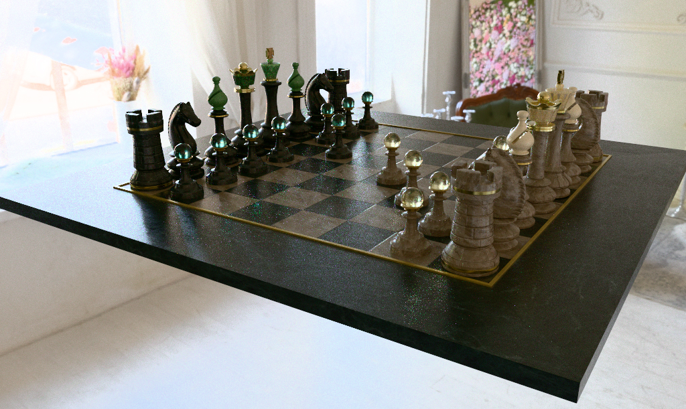
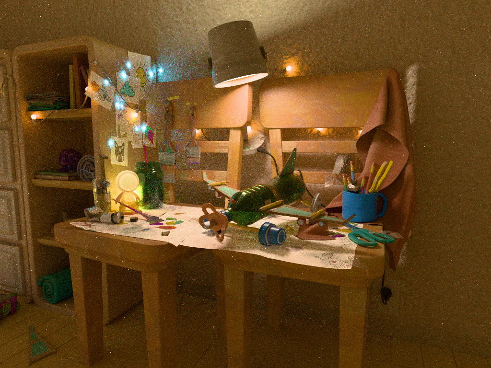
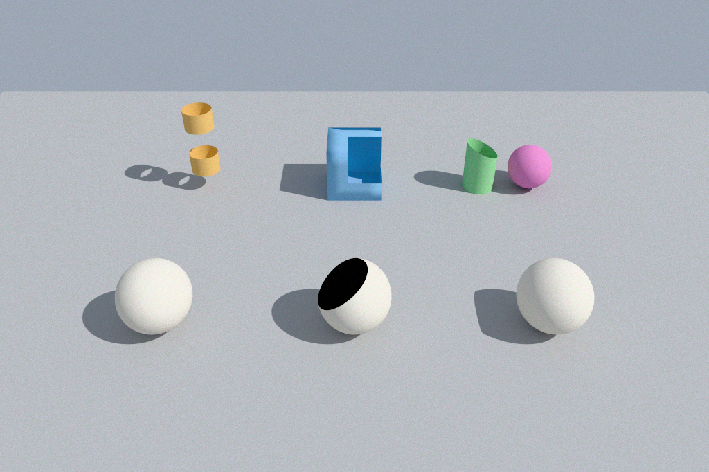

A spectral, wavefront GPU path tracer that plugs into OpenUSD's Hydra. Any USD stage opened in usdview, usdrecord or Houdini Solaris can be rendered by it. Its materials are MaterialX's own generated code, compiled and run on the GPU, and its light is carried as wavelengths rather than RGB.
No hand-written OpenPBR or Standard Surface code path. A bound material is generated by MaterialX into GLSL, compiled to SPIR-V and run. A material either renders exactly as authored or is reported as an error. There is no approximate middle state.
Each path carries four wavelengths. RGB appears only where an asset authors it and where the film resolves the image. Measured spectra, blackbody temperatures and lights authored in lumens or lux are honoured as physics, not as tints.
Hits are sorted by material and each material runs as its own GPU program. A 400-node procedural shader on one object costs nothing on the rest of the frame.
Interactive frames can go through NVIDIA DLSS Super Resolution, DLAA or Ray Reconstruction. It is optional and found at runtime. Final-quality renders never pass through it. They can be denoised instead, by Open Image Denoise, on any GPU or the CPU, when you ask for it. The film itself is never changed.
Steps 1 to 3 run inside OpenUSD, with small hdClaude additions. Steps 4 to 9 are hdClaude. Use the tabs, the buttons, or the arrow keys.
Shipped means built, tested and in the gallery. Partial means it works for part of the feature and the rest is in progress. States follow the project's phase tracker.
The Cornell box is built from Cornell's published measurements: its geometry, its light's emission and its paints' reflectance spectra. Every surface is flat and Lambertian, so the radiosity equation can be solved for it independently, per nanometre from 400 to 700. The render is then compared with that solution window by window.
| Window | Reference | Render | Off by |
|---|---|---|---|
| Light, seen directly | 66.704, 35.196, 8.800 | 66.575, 35.243, 8.783 | 0.19% |
| Ceiling | 0.3285, 0.1219, 0.0261 | 0.3295, 0.1213, 0.0258 | 0.49% |
| Back wall | 0.8952, 0.4594, 0.1076 | 0.8965, 0.4615, 0.1078 | 0.44% |
| Red wall | 0.4645, 0.0205, 0.0006 | 0.4665, 0.0205, 0.0006 | 0.43% |
| Green wall | 0.1305, 0.2123, 0.0024 | 0.1306, 0.2117, 0.0024 | 0.29% |
| Floor | 0.6713, 0.3134, 0.0772 | 0.6691, 0.3128, 0.0770 | 0.33% |
| Short block, top | 0.6009, 0.3160, 0.0753 | 0.6043, 0.3158, 0.0751 | 0.57% |
| Tall block, front | 0.2703, 0.1370, 0.0301 | 0.2698, 0.1368, 0.0300 | 0.47% |
Linear sRGB. "Off by" is the worst channel carrying at least a tenth of the window's brightest. The pass threshold is 1.5%. As a control, the same box with its paints reduced to RGB colours misses by up to 5.39%, which shows the comparison can tell whether the measured spectra were used.
Nine end-to-end cases cover power, radiometric power, spheres, spots, distant lights and domes, including a lopsided dome map on a Z-up stage. All land within 0.6% of the authored lumens or lux. A wrong up axis would be 1.9× off, so the test can tell.
Each of the 22 closure overrides is integrated on the GPU for energy and probability mass. A dielectric seen from inside reflects 0.0859 against a closed form's 0.0860 at 35° of internal incidence.
Behaviour is checked against the USD, MaterialX, CIE and UsdLux definitions, not against another renderer's picture. When a spot light was found to follow the formulas wrongly, it was fixed to the specification and the affected gallery image was re-baselined, with the reason recorded.
1024 px wide, 1024 samples per pixel, eight bounces, on an RTX 5060 Ti. Each image is gated against its committed baseline after every change that affects rendering.






A phase is complete only when its exit gate passes and the evidence is recorded. The foundation, the MaterialX target and the DLSS path are complete. Most of the remaining work is breadth, such as splats, fog, displacement and interactivity, on top of a core that already holds.
genglsl_pt MaterialX targetextendA real-time reconstruction that works on any Vulkan 1.3 GPU, so interactive viewing works without NVIDIA hardware, and on Linux, where DLSS is not built. Final frames already have a denoiser that runs anywhere.
Camera responsivity curves from the physical-camera proposal complete the chain from light emitted in lumens to a sensor's response.
Wavelength-dependent refraction with hero-wavelength MIS, the last spectral effect the transport does not yet carry.
Where USD has no standard yet, hdClaude follows the open proposals as drafted, so scenes authored today keep working as the proposals land. Where a draft is vague, hdClaude's choices are recorded and the open questions are queued for the authors.
| Proposal | Status | In hdClaude |
|---|---|---|
| UsdLux physical lighting | Draft | Spectral illuminants, plus photometric and radiometric power and illuminance, are implemented. Four discrepancies in the draft are queued for its authors. |
| Physical cameras | Branch | Exposure is already in OpenUSD's UsdGeomCamera and is applied. Responsivity curves are deferred. |
| Stage metrics in Hydra | To raise | Metres per unit and up axis reach lights through hdClaude's own adapter. They belong in Hydra's scene globals, so every renderer can read them. |
| Material spectra | None yet | hdClaude reads its own hdclaude:spectrum:* attributes until a MaterialX proposal exists. |